Contents
clear; close all; clc;
Description
This code processes skin and bone surface meshes for the lower limb to simulate amputation. Amputation is "simulated" in the sense that a 3D surface mesh is obtained with a shape that may be expected from a typical amputation. The current code is for transtibial amputation.
This code requires the GIBBON MATLAB toolbox www.gibboncode.org
Control parameters
projectFolder = fileparts(fileparts(mfilename('fullpath'))); loadFolder=fullfile(projectFolder,'data','BodyParts3D','post'); saveFolder=loadFolder; saveNameGeom='BodyParts3D_right_leg_transtibial_amp'; fileNames={'right_femur','right_tibia','right_fibula','right_patella','right_leg_skin'}; saveOn=0; amputationDistanceTibia=180; amputationDistanceFibula=amputationDistanceTibia-30; amputationDistanceSkin=amputationDistanceTibia-25; distalExcess=25; boneRoundFactor=1; radiusEnd=distalExcess+(amputationDistanceTibia-amputationDistanceSkin); taperHeigth=100; taperThreshold=15; %Regions more distance than threshold are tappered taperFraction=0.3; amputationDistances=[amputationDistanceTibia amputationDistanceFibula amputationDistanceSkin]; tibiaDistalCutRadialFactor=0.5; numBezierPoints=50; nCut=vecnormalize([0 0 1]); %Normal direction to plane topCropOffset=10;
Loading surfaces into cell array
%Allocate cell arrays FT=cell(1,numel(fileNames)); VT=cell(1,numel(fileNames)); CT=cell(1,numel(fileNames)); %Loop over all surfaces for q=1:1:numel(fileNames) %Import mesh fileName=fileNames{q}; fileName_mat=fullfile(loadFolder,[fileName,'.mat']); model=load(fileName_mat); F=model.faces; %Faces V=model.vertices; %Vertices C=q*ones(size(F,1),1); %Color label %Store mesh data in cell array FT{q}=F; VT{q}=V; CT{q}=C; end
Compute landmarks
P_patella_centroid=triSurfCentroid(FT{4},VT{4}); %Centroid of the patella
Visualize surface and landmarks
cFigure; hold on; gpatch(FT,VT,CT,'none',0.5); plotV(P_patella_centroid,'k.','MarkerSize',35); axisGeom; camlight headlight; colormap gjet; icolorbar; gdrawnow;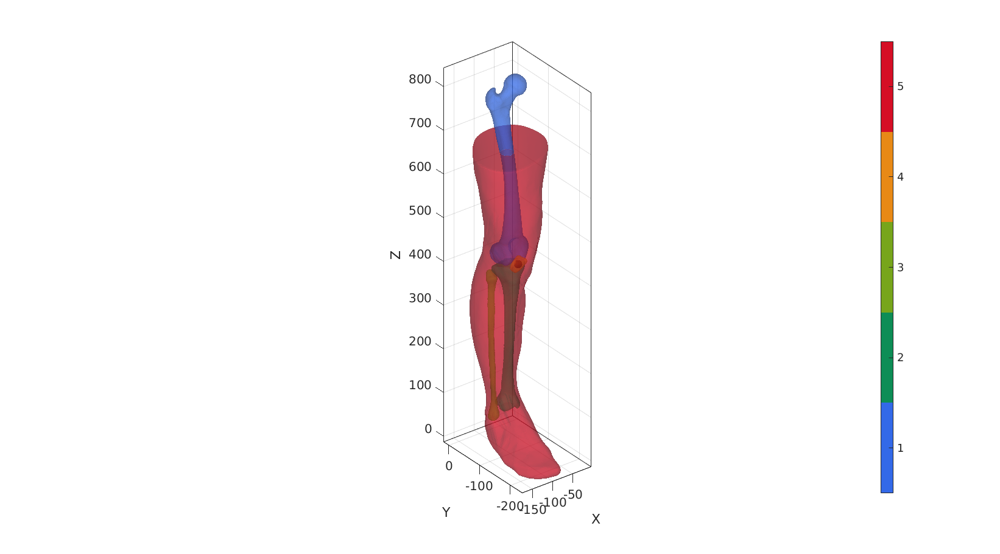
Cut surfaces
%Allocate cell arrays FT_amp=FT; VT_amp=VT; CT_amp=CT; c=[2 3 5]; %Indices (=labels) for surfaces to cut for q=1:numel(c) cutLevelNow=P_patella_centroid(:,3)-amputationDistances(q); %Get surface F=FT_amp{c(q)}; V=VT_amp{c(q)}; %Use triSurfSlice to process cut snapTolerance=mean(patchEdgeLengths(F,V))/100; P=[0 0 cutLevelNow]; %Point on plane [Fc,Vc,~,logicSide]=triSurfSlice(F,V,[],P,nCut,snapTolerance); [Fc,Vc]=patchCleanUnused(Fc(~logicSide,:),Vc); %Clean-up mesh Cc=c(q)*ones(size(Fc,1),1); %Adjusted color data (shorter list after cut) %Store processed mesh data in cell arrays FT_amp{c(q)}=Fc; VT_amp{c(q)}=Vc; CT_amp{c(q)}=Cc; end
Visualization
cFigure; hold on; title('Cut features'); % gpatch(FT,VT,'w','none',0.1); gpatch(FT_amp,VT_amp,CT_amp,'none',0.5); axisGeom; camlight headlight; colormap gjet; icolorbar; gdrawnow;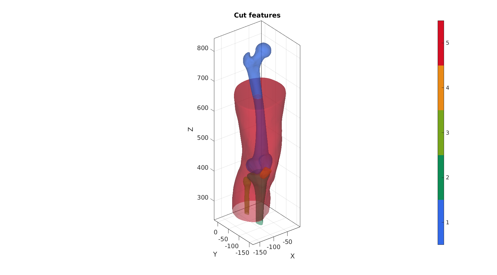
Set up skin taper parameterisation
%Get tibia end curve
Ft=FT_amp{2};
Vt=VT_amp{2};
Ebt=patchBoundary(Ft,Vt);
indBt=edgeListToCurve(Ebt);
indBt=indBt(1:end-1);
P_tibia_end_centroid=mean(Vt(indBt,:),1);
Fs=FT_amp{5};
Vs=VT_amp{5};
D=Vs(:,3)-(min(Vs(:,3))+taperHeigth);
D(D>0)=0;
D=abs(D);
D=D./max(D);
D=D.^2;
[Dp,indMin]=minDist(Vs(:,[1 2]),Vt(indBt,:));
Dp(Dp<=taperThreshold)=taperThreshold;
Dp=Dp-min(Dp);
Dp=Dp./max(Dp);
R=Vt(indBt(indMin),[1 2])-Vs(:,[1 2]);
R=R.*D.*taperFraction.*Dp;
Process skin taper
Vs1=Vs; %Initialize as original Vs(:,[1 2])=Vs(:,[1 2])+R; %Push to produce taper %Overide skin surface with tapered surface FT_amp{5}=Fs; VT_amp{5}=Vs;
Visualisation
% MR=sqrt(sum(R.^2,2)); cFigure; hold on; title('taper morphing'); gpatch(FT_amp,VT_amp,'w','none',0.5); % gpatch(Fs,Vs,'w','none',0.5); quiverVec(Vs1,R); colormap gjet; colorbar; axisGeom; camlight headlight; gdrawnow;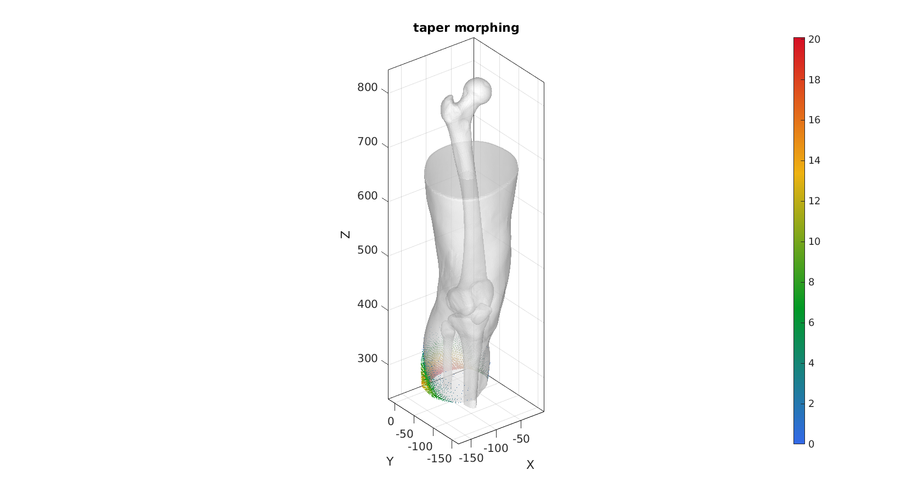
Process skin distal end closure
P_end=P_tibia_end_centroid-[0 0 distalExcess]; Ebs=patchBoundary(Fs,Vs); [Fsb,Vsb,indBs,Nd,P1,P2,P3,XB,YB,ZB]=smoothBezierClose(Fs,Vs,Ebs,P_end,numBezierPoints);
Visualization
cFigure; hold on; title('Distal end closure'); gpatch(FT_amp,VT_amp,'w','none',1); gpatch(Fs,Vs,'w','none',0.25); hp=gpatch(Fsb,Vsb,Vsb(:,3),'none',1); hp.FaceColor='interp'; % gpatch(Ebs,Vs,'none','b',1,3); quiverVec(Vs(indBs,:),Nd(indBs,:),radiusEnd/4,'k'); plotV(P1,'r.-','MarkerSize',15,'LineWidth',2); plotV(P2,'g.-','MarkerSize',15,'LineWidth',2); plotV(P3,'b.-','MarkerSize',15,'LineWidth',2); for q=1:size(XB,2) plotV([XB(:,q) YB(:,q) ZB(:,q)],'k.-','LineWidth',0.5,'MarkerSize',5); end plotV(P_end,'k.','MarkerSize',25); axisGeom; camlight headlight; gdrawnow;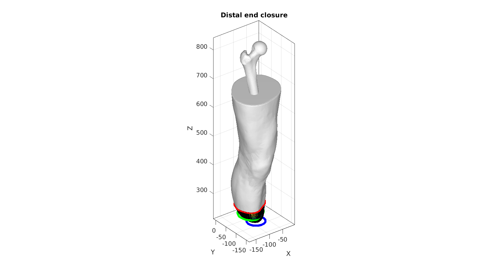
% Visualization
cFigure; hold on; title('Distal end closure');
hp=gpatch(Fsb,Vsb,Vsb(:,3),'k',1); hp.FaceColor='interp'; % gpatch(Ebs,Vs,'none','b',1,3);
axisGeom; camlight headlight; gdrawnow;
dfasfa
Merge skin components and remesh
pointSpacing=mean(patchEdgeLengths(Fs,Vs));
[Fs,Vs]=joinElementSets({Fs,Fsb},{Vs,Vsb});
[Fs,Vs]=mergeVertices(Fs,Vs);
optionStructRemesh.pointSpacing=pointSpacing; %Set desired point spacing
optionStructRemesh.disp_on=0; % Turn off command window text display
[Fs,Vs]=ggremesh(Fs,Vs,optionStructRemesh);
FT_amp{5}=Fs;
VT_amp{5}=Vs;
CT_amp{5}=5*ones(size(Fs,1),1);
% [FT,VT,CT]=joinElementSets(FT,VT); % [FT_amp,VT_amp,CT_amp]=joinElementSets(FT_amp,VT_amp);
cFigure; subplot(1,2,1); hold on; % gpatch(FT,VT,'w','none',0.25); gpatch(FT_amp,VT_amp,CT_amp,'none',0.5); axisGeom; camlight headlight; colormap gjet; icolorbar; subplot(1,2,2); hold on; gpatch(FT_amp,VT_amp,'w','k',1); axisGeom; camlight headlight; gdrawnow;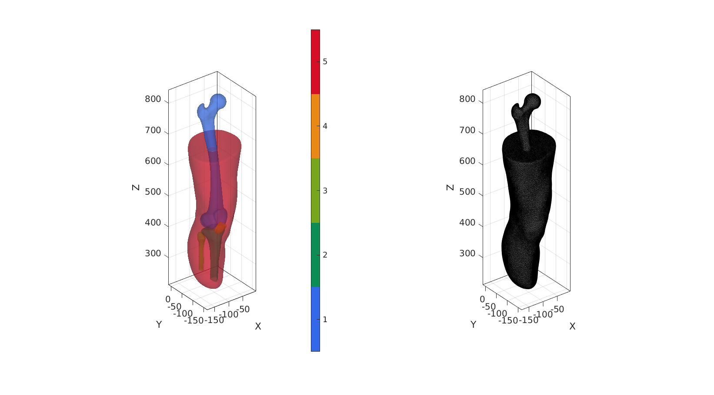
Ft=FT_amp{2};
Vt=VT_amp{2};
Ebs=patchBoundary(Ft,Vt);
indBs=edgeListToCurve(Ebs);
indBs=indBs(1:end-1);
P_mid=mean(Vt(indBs,:),1);
radiusEnd=boneRoundFactor*mean(minDist(Vt(indBs,:),P_mid))/2;
P_end=P_mid-[0 0 radiusEnd];
[Fsb,Vsb,indBs,Nd,P1,P2,P3,XB,YB,ZB]=smoothBezierClose(Ft,Vt,Ebs,P_end,numBezierPoints);
Visualization
cFigure; hold on; gpatch(Ft,Vt,'w','none',0.25); gpatch(Ebs,Vt,'none','b',1,3); hp=gpatch(Fsb,Vsb,'w','k',1,1); % hp.FaceColor='interp'; plotV(P_tibia_end_centroid,'k.','MarkerSize',35); quiverVec(Vt(indBs,:),Nd(indBs,:),radiusEnd/4,'k'); plotV(P1,'r.-','MarkerSize',15,'LineWidth',2); plotV(P2,'g.-','MarkerSize',15,'LineWidth',2); plotV(P3,'b.-','MarkerSize',15,'LineWidth',2); for q=1:size(XB,2) plotV([XB(:,q) YB(:,q) ZB(:,q)],'k.-','LineWidth',0.5,'MarkerSize',5); end axisGeom; camlight headlight; gdrawnow;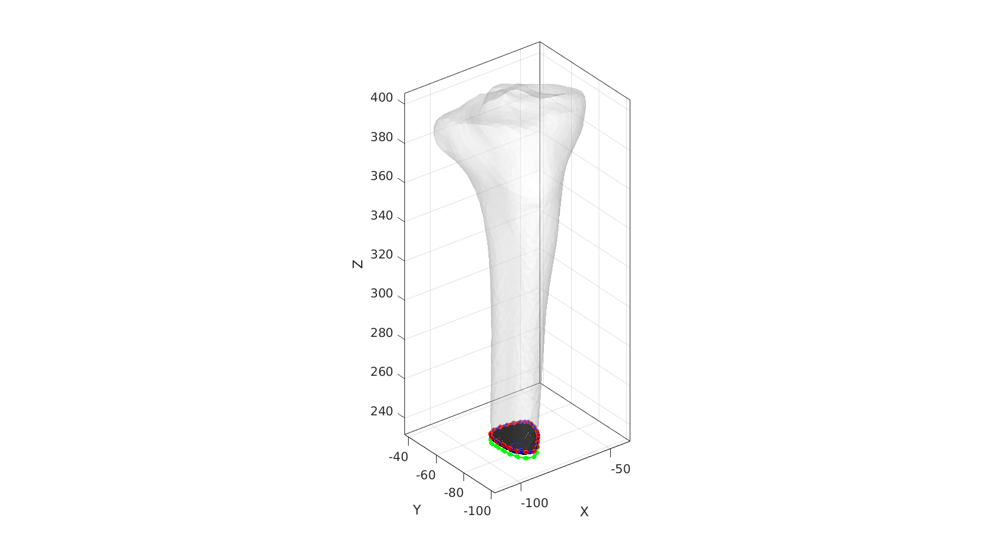
Merge bone components and remesh
pointSpacing=mean(patchEdgeLengths(Ft,Vt));
[Ft,Vt]=joinElementSets({Ft,Fsb},{Vt,Vsb});
[Ft,Vt]=mergeVertices(Ft,Vt);
optionStructRemesh.pointSpacing=pointSpacing; %Set desired point spacing
optionStructRemesh.disp_on=0; % Turn off command window text display
[Ft,Vt]=ggremesh(Ft,Vt,optionStructRemesh);
FT_amp{2}=Ft;
VT_amp{2}=Vt;
CT_amp{2}=2*ones(size(Ft,1),1);
cFigure; subplot(1,2,1); hold on; % gpatch(FT,VT,'w','none',0.25); gpatch(FT_amp,VT_amp,CT_amp,'none',0.5); axisGeom; camlight headlight; colormap gjet; icolorbar; subplot(1,2,2); hold on; gpatch(FT_amp,VT_amp,'w','none',0.5); gpatch(Ft,Vt,'w','k',1); axisGeom; camlight headlight; gdrawnow;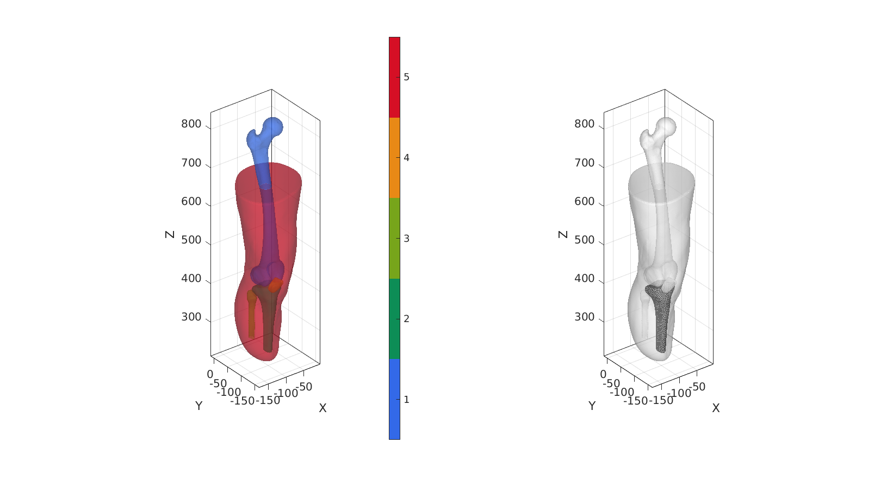
FIBULA
Ft=FT_amp{3};
Vt=VT_amp{3};
Ebs=patchBoundary(Ft,Vt);
indBs=edgeListToCurve(Ebs);
indBs=indBs(1:end-1);
P_mid=mean(Vt(indBs,:),1);
radiusEnd=boneRoundFactor*mean(minDist(Vt(indBs,:),P_mid))/2;
P_end=P_mid-[0 0 radiusEnd];
[Fsb,Vsb,indBs,Nd,P1,P2,P3,XB,YB,ZB]=smoothBezierClose(Ft,Vt,Ebs,P_end,numBezierPoints);
Visualization
cFigure; hold on; gpatch(Ft,Vt,'w','none',0.25); gpatch(Ebs,Vt,'none','b',1,3); hp=gpatch(Fsb,Vsb,'w','k',1,1); % hp.FaceColor='interp'; plotV(P_tibia_end_centroid,'k.','MarkerSize',35); quiverVec(Vt(indBs,:),Nd(indBs,:),radiusEnd/4,'k'); plotV(P1,'r.-','MarkerSize',15,'LineWidth',2); plotV(P2,'g.-','MarkerSize',15,'LineWidth',2); plotV(P3,'b.-','MarkerSize',15,'LineWidth',2); for q=1:size(XB,2) plotV([XB(:,q) YB(:,q) ZB(:,q)],'k.-','LineWidth',0.5,'MarkerSize',5); end axisGeom; camlight headlight; gdrawnow;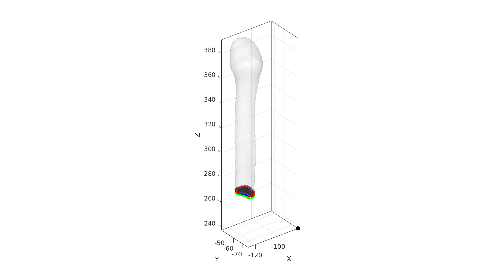
Merge bone components and remesh
pointSpacing=mean(patchEdgeLengths(Ft,Vt));
[Ft,Vt]=joinElementSets({Ft,Fsb},{Vt,Vsb});
[Ft,Vt]=mergeVertices(Ft,Vt);
optionStructRemesh.pointSpacing=pointSpacing; %Set desired point spacing
optionStructRemesh.disp_on=0; % Turn off command window text display
[Ft,Vt]=ggremesh(Ft,Vt,optionStructRemesh);
FT_amp{3}=Ft;
VT_amp{3}=Vt;
CT_amp{3}=3*ones(size(Ft,1),1);
cFigure; subplot(1,2,1); hold on; % gpatch(FT,VT,'w','none',0.25); gpatch(FT_amp,VT_amp,CT_amp,'none',0.5); axisGeom; camlight headlight; colormap gjet; icolorbar; subplot(1,2,2); hold on; gpatch(FT_amp,VT_amp,'w','none',0.5); gpatch(Ft,Vt,'w','k',1); axisGeom; camlight headlight; gdrawnow;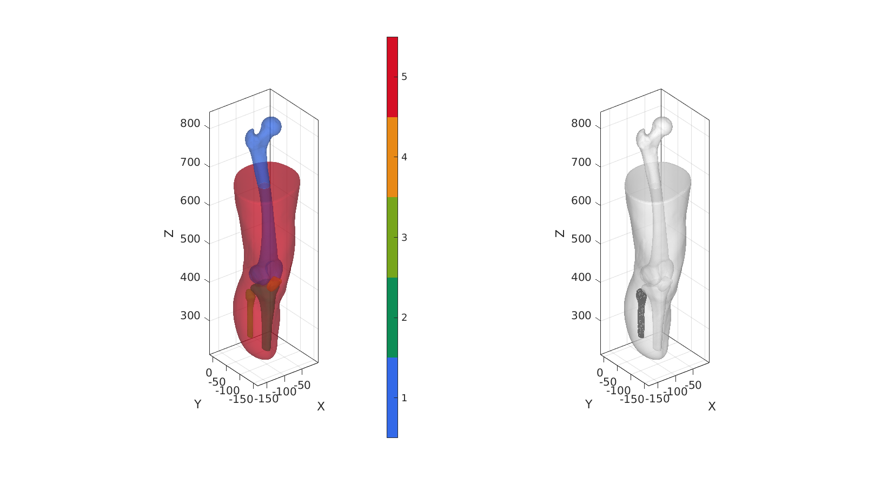
%Get surface F=FT_amp{5}; V=VT_amp{5}; cutLevelNow=max(V(:,3))-topCropOffset; %Use triSurfSlice to process cut snapTolerance=mean(patchEdgeLengths(F,V))/100; P=[0 0 cutLevelNow]; %Point on plane [Fc,Vc,~,logicSide]=triSurfSlice(F,V,[],P,-nCut,snapTolerance); [Fc,Vc]=patchCleanUnused(Fc(~logicSide,:),Vc); %Clean-up mesh % Remesh using ggremesh optionStruct3.pointSpacing=mean(patchEdgeLengths(F,V)); optionStruct3.disp_on=0; % Turn off command window text display optionStruct3.pre.max_hole_area=100; %Max hole area for pre-processing step optionStruct3.pre.max_hole_edges=0; %Max number of hole edges for pre-processing step [Fc,Vc]=ggremesh(Fc,Vc,optionStruct3); Ebs=patchBoundary(Fc,Vc); indBs=edgeListToCurve(Ebs); indBs=indBs(1:end-1); Fcs=Fc; Vcs=Vc; indBss=indBs;
%Get surface F=FT_amp{1}; V=VT_amp{1}; %Use triSurfSlice to process cut snapTolerance=mean(patchEdgeLengths(F,V))/100; P=[0 0 cutLevelNow]; %Point on plane [Fc,Vc,~,logicSide]=triSurfSlice(F,V,[],P,-nCut,snapTolerance); [Fc,Vc]=patchCleanUnused(Fc(~logicSide,:),Vc); %Clean-up mesh % Remesh using ggremesh optionStruct3.pointSpacing=mean(patchEdgeLengths(F,V)); optionStruct3.disp_on=0; % Turn off command window text display optionStruct3.pre.max_hole_area=100; %Max hole area for pre-processing step optionStruct3.pre.max_hole_edges=0; %Max number of hole edges for pre-processing step [Fc,Vc]=ggremesh(Fc,Vc,optionStruct3); Ebs=patchBoundary(Fc,Vc); indBs=edgeListToCurve(Ebs); indBs=indBs(1:end-1);
z=0.5*(mean(Vc(indBs,3))+mean(Vc(indBs,3))); Vcs(indBss,3)=z; Vc(indBs,3)=z;
pointSpacing=mean(patchEdgeLengths(Fcs,Vcs));
[Ftt,Vtt]=regionTriMesh3D({Vcs(indBss,:),Vc(indBs,:)},pointSpacing,0,'linear');
cFigure; gpatch(Fcs,Vcs,'gw','k',1); gpatch(Fc,Vc,'rw','k',1); gpatch(Ftt,Vtt,'bw','k',0.5); colormap gjet; axisGeom; camlight headlight; gdrawnow;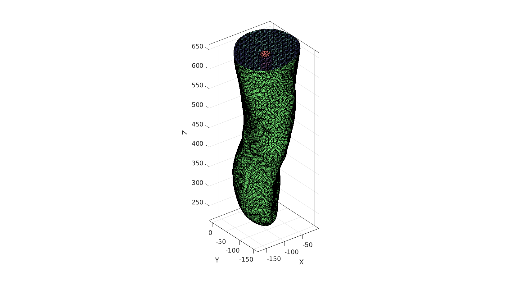
FT_amp{1}=fliplr(Fc); %invert femur normals
VT_amp{1}=Vc;
CT_amp{1}=1*ones(size(Fc,1),1);
FT_amp{5}=Fcs;
VT_amp{5}=Vcs;
CT_amp{5}=5*ones(size(Fcs,1),1);
FT_amp{6}=Ftt;
VT_amp{6}=Vtt;
CT_amp{6}=6*ones(size(Ftt,1),1);
cFigure; hold on; gpatch(FT_amp,VT_amp,CT_amp,'none',0.5); % patchNormPlot(FT_amp,VT_amp); axisGeom; camlight headlight; colormap gjet; icolorbar; gdrawnow;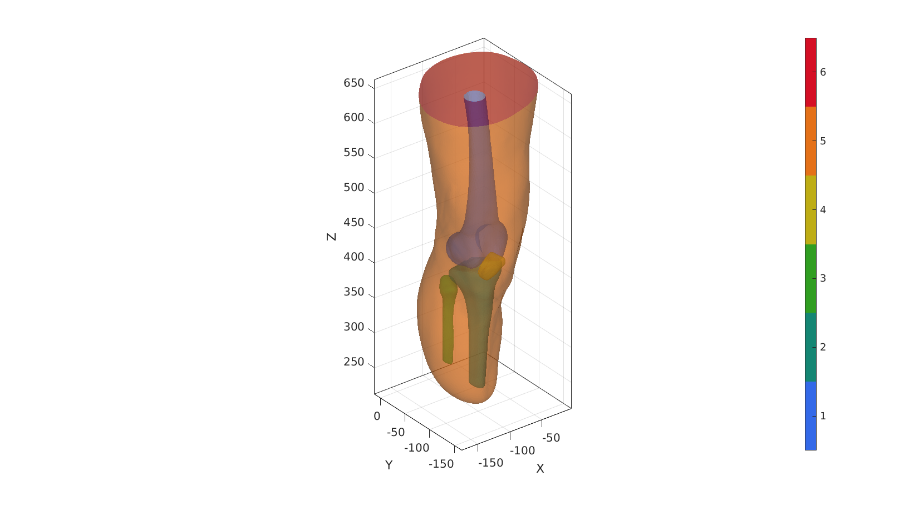
Save model
if saveOn==1 saveName_mat=fullfile(saveFolder,[saveNameGeom,'.mat']); save(saveName_mat,'FT_amp','VT_amp','CT_amp'); end
function [Fsb,Vsb,indBs,Nd,P1,P2,P3,XB,YB,ZB]=smoothBezierClose(Fs,Vs,Ebs,P_end,numPoints) indBs=edgeListToCurve(Ebs); indBs=indBs(1:end-1); [~,~,Ns]=patchNormal(Fs,Vs); [~,~,NEb]=edgeVec(Ebs,Vs); NEb=vecnormalize(NEb); Nd=vecnormalize(cross(NEb,Ns)); cPar.n=25; Nd=patchSmooth(Ebs,Nd,[],cPar); %Bezier point set 1 P1=Vs(indBs,:); P1_mid=mean(P1,1); distanceEnd=sqrt(sum((P_end-P1_mid).^2,2)); %Bezier point set 2 f=1./abs(Nd(indBs,3)); %Extend factor for direction vectors P2=P1+distanceEnd/2*f(:,ones(1,3)).*Nd(indBs,:); %Position half-way %Bezier point set 3 P3=P2; P3(:,3)=P_end(:,3); %Shift to bottom P3=P3-mean(P3,1); %Shift on own centre [t,r]=cart2pol(P3(:,1),P3(:,2)); %Polar coordinates [P3(:,1),P3(:,2)]=pol2cart(t,distanceEnd/2*ones(size(r))); %Force constant radius P3=P3+P_end; %Place centered on end %Bezier point set 4 P4=P_end; XB=zeros(numPoints,size(P1,1)); YB=zeros(numPoints,size(P1,1)); ZB=zeros(numPoints,size(P1,1)); for q=1:1:size(P1,1) p=[P1(q,:); P2(q,:); P3(q,:); P4]; %Control points V_bezier=bezierCurve(p,numPoints); %Compute bezier curve XB(:,q)=V_bezier(:,1); YB(:,q)=V_bezier(:,2); ZB(:,q)=V_bezier(:,3); end [Fsb,Vsb]=meshToPatch(XB,YB,ZB,1); [Fsb,Vsb]=quad2tri(Fsb,Vsb); [Fsb,Vsb]=mergeVertices(Fsb,Vsb); [Fsb,Vsb]=patchCleanUnused(Fsb,Vsb); end
function [F,V]=meshToPatch(X,Y,Z,closeSection) %Create quad patch data [F,V] = surf2patch(X,Y,Z); %Close section if required if closeSection==1 I=[(1:size(Z,1)-1)' (1:size(Z,1)-1)' (2:size(Z,1))' (2:size(Z,1))' ]; J=[size(Z,2).*ones(size(Z,1)-1,1) ones(size(Z,1)-1,1) ones(size(Z,1)-1,1) size(Z,2).*ones(size(Z,1)-1,1)]; F_sub=sub2ind(size(Z),I,J); F=[F;F_sub]; end end